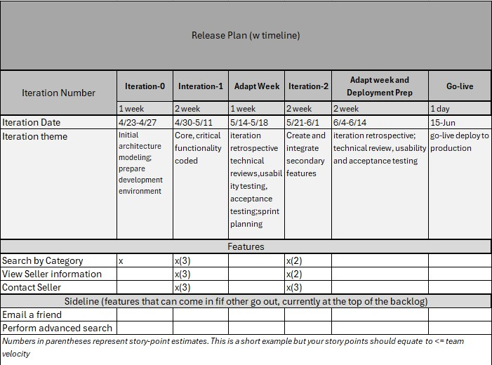

Agile Scrum
Knowledge Areas
Purpose: Feasibility Analyis
Determine if an idea has enough merit to justify going forward with more detailed requirements, planning, funding and staffing. Why are you doing the project? What is the value to this request? What are the risks in pursuing this project?
Details
[1] Identify members for feasibility phase i.e. architect, developers, analyst, customer and role in feasibility process.
[2] Based request or idea approval area to be analyzed, example:
* User Scenarios: Storyboards
* User stories: Marketing Proposals
* Use Cases: Competitive Analysis (i.e. website)
[3] Create Feasibility Requirements based on Project Details, target users, Estimated timeline, pricing/revenue model, scope, overview of features (1 - X) with detail.
[4] Feasibility Discussion Guide provides a list of questions to examine each project, quantify benefits, and identify potential issues.
Note: add details from page 125
Purpose: Create Vision Statement
Input: Feasibility Analysis
Details
Format in creating a vision statement:
* Who is the customer?
* What do they need?
* What is the category of the product or service?
* What are the most compelling benefits of the customer?
* Can you quantify the benefits?
* What differentiates your product from existing alternative?
Example if formatting for Appie iPod Elevator Statement:
For: Music lovers
Who: desire a simple way to listen to and manage their songs
What(the): IPod
Is a: portable digital music player
That: provides intuitive, easy to use controls
Unlike: other MP3 players
Our: product provide seamless intergration with a world-class music store (iTunes)
Example if formatting for Auctionator Elevator Statement:
For:: internet buyers and sellers
Who: would like to sell their items locally within an auction framework
What(the):Product Name
Is a:local online auction system
That: allows the purchase of goods
Unlike: ebay
Our: product allows the winning bidder to pay in person using cash or check
And unlike:Craigslist
Our: product allows the seller to put an item up for bid, as opposed to selling at fixed price.
Purpose: Create Product Backlog Items (features)
Input: TBD
Provides enough information to plan a feature, to discuss it quickly and prioritize.
Additional dialog and artifacts are necessary to support development (functional/technical requirements, etc..)
Details
Format of a feature
* Feature ID: Unique number assigned to the feature
* Feature Name: high-level customer description, i.e. Ability to search by category
* Description: description of functionality
* Feature Type: Customer or System
* Estimated work effort (ideal days): labor estimated as needed
* Points: measures relative size of the feature; main metric for determining project capacity
* Planned interation: the interation which the feature is planned for
* Customer Value (C,H,M,L): (C)ritical, customer valued that must be completed or no value.
* User: same as actor in use case.
* Requirement Uncertainty: comfortable with awareness and confidently understood.
* Technical Uncertainty: technical risk is technology experience or stability of technology.
* Dependencies: on other features to be in place before you can build current feature.
* Acceptance: high-level of user acceptance test; feature to pass before deemed complete?
Purpose: Prioritize, Sequence, and Group PBI
Input: TBD
This can be done interatively by building feature sets and deploying these features after each iteration if needed.
Ex: Critical in interation-1, High priority interation-2, Medium priority iteration-2
Details
Prioritization of backlogs involves determining the business value of each user story.
High-value items are moved to the top of the product backlog. This value-based prioritization creates the prioritized product backlog.
Grooming the prioritized product backlog validates the value and prepares the team for success.
Features with many dependencies should be first features in sequence.
Requirement and Technical uncertainty (risk) as:
* High-risk/critical high business value move to top priority and pursue early in project
* High-risk /medium business value work on early or middle/end of project
* High-risk/ low business value move to bottom of priority or remove
* Grouping based on dependencies
The product owner should be able to see dependencies and groupings, which can assign business value in themselves in customer terms. These values will become features and themes that are assigned into releases
Purpose: Estimate PBI/Features
Input: Prioritized product backlog / features
Details
[1] Estimate the features in a short time-boxed exercise which you estimate feature size and not duration.
[2] Use feature size to assign feature to interations and create a release plan.
[3] Break down the features assigned to the first iteration. Breaking down means identifying the specific tasks needed to build the feature and estimate the hours required.
[4] Re-estimate on a daily basis during an iteration such as estimating the time remaining on open tasks.
Use story-points to estimate size relative to other features; you may not have enough information to estimate
the time to create the feature but can immediately begin to compare the sizes of features to each other to determine a relative size.
Story points can be leveraged by using Fibonacci scale; 1,2,3,5,8,13,etc.. In such, previous number added to current number giving next number in the scale.
(see notes for more detail on Pg 188)
For initial iteration start by estimating story-points on a few features that are size:2, then of size:5. This will create a base-line to compare other features to and estimate against.
Purpose: Create Release Plan
Input: Prioritized PBI
Input: Estimated PBI
Output: Release Plan

Details
Interation-0
[1] Preliminary planning to be considered for release planning activity. To prepare for development iteration / sprint and estimate work. Areas to consider for preliminary work:a. Environment setup
b. Project Wiki / sharepoint
c. Funding
d. Create/organized support tools for bug tracking
e. Development iteration (Sprint)
note: First time agile projects (pilot, poc,) start off w 2-week iterations, if features are too larger to complete in 2-weeks have team breakdown into right size or increase interation to 3-week.
[2] Sprint Planning (add week for sprint planning(adapt week))
a. Product Backlog grooming
b. Spring Planning
c. Sprint Backlog
d. Sprint review meeting
e. Retrospective meeting
note Ex: Sprint iteration (2 weeks), plus Sprint Planning (1 week) = 3 week interation
[3] If timeline provided work backwards from timeline date. Projects that are timeline driven - create a release plan w those many iterations (see example). Feature rich driven projects open too many iterations, leverage priority!!
[4] Assign features to iterations
a. Identify team velocity
b. Assign features based on velicity for that iteration
c. If first time agile project or pilot, porceed to detailed planning for first iteration; team to breakdown features into tasks and perform estimates at the task / hours
d. Consider feature to be delivered first as priority around most valued by the stakeholder, and keep dependent/sequenced features together
[5] Due to new discoveries and adaption happening throughout the project expect to modify the Release Plan frequently. Inform stakeholder(s) the Release Plan is not a guarantee. Good to provide a release date range
[6] Communicate Release Plan to Stakeholdrs
Purpose: Create Product Roadmap
Input: Vision Statement
* Plan of action or solutions that will evolve overtime.
* PO uses roadmap to outline future product functionality/when new features will be released.
* Provides 6-12 month team goals and is based off of Vision Statement.

Details
[1] Create vision statement
[2] Create product roadmap as goals in product roadmap will help determine features and functions.
Shows major milestones and goals of project; can be broke down into category and dates.
Owned by PO and is presented to SH and is created by Vision Statement (which has been approved by SH).
[3] Roadmap to be updated every 6 months as insight knowing the project is heading in the right direction.
[4] Review roadmap and check off goals completed and reprioritizing goals to accomplish in next 6-12 months.
Milestones for roadmap, to consider:
1.What are relative priorities of each feature?
2. When do we intend to work on in each initiative
3. Particular dates the team needs by?
4. Any internal/external dependencies?
5. Which team will be working on each initiative?
6. Team availability in current work schedule?
Purpose: Create Sprint Backlog
Input: TBD
*TBD
Details
[1] TBD
[2] TBD
[3] TBD
Details
Phasellus Ac Leo Eget
Vivamus venenatis, nibh ut tempus viverra, tellus augue pulvinar sapien, at iaculis justo nisi non metus. Quisque quis malesuada arcu, sed ultricies nibh. Duis vehicula metus quis arcu rutrum faucibus eget ut ex. Curabitur lacus justo, iaculis congue suscipit quis, posuere at turpis.
Class aptent taciti sociosqu ad litora torquent per conubia nostra, per inceptos himenaeos. Donec in quam non urna volutpat consequat. Proin mollis ut mauris et venenatis. Vivamus dui nibh, blandit vitae pellentesque sed, finibus sit amet nulla.
Etiam Imperdiet Elit
Nunc rhoncus convallis ex, eget viverra ex pulvinar non. Suspendisse enim ligula, varius sed rutrum id, bibendum vitae lectus. Mauris mollis pellentesque diam et congue. Praesent dignissim semper facilisis. Duis gravida, elit nec iaculis efficitur, sem orci commodo lectus, id cursus sem diam in eros.
Maecenas porta mi sed diam condimentum gravida. Nam a ligula consectetur, imperdiet lacus nec, rutrum dui. Sed aliquam at magna non mollis. Duis fermentum purus eget nisi dictum, vitae bibendum nulla cursus.
Morbi Bibendum
Donec ut faucibus erat, vel efficitur enim. Fusce sit amet ligula eu libero lacinia condimentum sed in turpis. Vestibulum ante ipsum primis in faucibus orci luctus et ultrices posuere cubilia Curae; Vivamus pulvinar metus vel neque sagittis, at pharetra tellus tincidunt. Sed semper euismod ipsum, feugiat consequat nisi eleifend et. Duis volutpat gravida efficitur. Nulla iaculis blandit semper. Maecenas eget aliquet libero. Donec sit amet sagittis erat. Sed elementum felis id interdum cursus. Phasellus ac urna feugiat, placerat massa et, vestibulum odio. Aenean eu nisl lobortis, tincidunt ligula rhoncus, convallis mi.